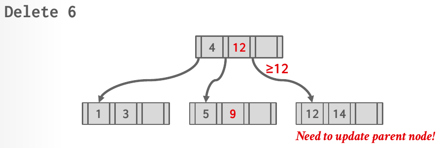

Database Internals in Go · Unit 4 · Lesson 5
P2.5 Deletion: Borrowing from Siblings
Implement Remove for every case that needs no merge: find the leaf, delete the entry, let the root leaf shrink, and repair an underflowing leaf by borrowing one entry from the sibling the tests expect and moving the parent's separator.
Your tree can grow; this stage makes it shrink. A deletion that leaves a leaf at least half full is a one-page change. One that leaves it too empty must take an entry from a neighbor, and the parent's separator moves with it. Unit 3 traced both on paper, under two different rules. This lesson says which rule the Go tests check, and builds the borrowing half of it; merging follows in the next lesson.
Unit 3, Lesson 8: under latch crabbing, when is a node "safe" for a delete, so that a writer can release the latches above it?
Unit 2, Lesson 7: a goroutine holds a write guard on a B+tree parent page and calls WritePage for a child. Why can't the lock order between frame latches and bpmLatch deadlock here?
Unit 4, Lesson 2: an internal page has Size() = 4, keys 30, 60 and 90 at indexes 1 to 3, and children P0 to P3. Which children do searches for 90 and for 89 follow?
What stage 5 covers
Everything happens in BPlusTree.Remove in btree/b_plus_tree.go, plus helpers on the leaf page. Its doc comment states the rules, and the stage-5 tests in b_plus_tree_delete_extra_test.go check them in the cases where no merge is needed:
- Removing from an empty tree, or removing a key that isn't in the tree, does nothing.
Removereturns nothing, so there is no result to report. - A page other than the root underflows when its size drops below
MinSize, which for a leaf isMaxSize / 2rounded down (Lesson 1). A leaf that is still atMinSizeor above needs no repair. - The root leaf has no minimum: it may shrink to a single entry. What happens when it becomes empty is stage 6.
- An underflowing page is repaired with one sibling, and the comment fixes which one: "its right sibling under the same parent if it has one, otherwise its left sibling". A sibling is an adjacent child of the same parent. The next leaf in the leaf chain doesn't count when it hangs under another parent.
- Redistribute first: "if the sibling holds more than
MinSizeentries, borrow one entry from it and update the separator in the parent." Only a sibling at exactlyMinSizeleads to a merge, which is stage 6.
Which rule the Go tests expect
Unit 3, Lesson 4 met two rules for an underflowing node. The lecture's algorithm (Lecture #08, slide 32) tries to redistribute first and merges only when no sibling can lend. HW3's official answer to Q3(c) is consistent with the opposite order: merge if the two nodes fit in one, and redistribute only if they don't. The writeup leaves the choice to you, and CMU's own tests mostly check that the tree stays valid. This course's tests check exact shapes, so they pin one rule, and it is the lecture's order with a fixed sibling choice:
| Lecture #08, slide 32 | HW3 Q3(c) official answer | This course's tests | |
|---|---|---|---|
| First choice | borrow from a sibling with an entry to spare | merge if the two nodes fit in one | borrow, if the sibling holds more than MinSize |
| Second choice | merge | borrow | merge (stage 6) |
| Which sibling | either | either | the right one under the same parent, else the left one |
TestBPlusTreeBorrowBeforeMerge is the test that tells the two orders apart. With a leaf max size of 5 (min size 2), the tree (3) / (|1,2) (|3,4,5) loses 1. The leaf [2] underflows, and it and its sibling would fit together in one leaf. HW3's rule merges them and the root collapses into (|2,3,4,5). The tests expect the borrow: the sibling holds 3 entries, more than its minimum of 2, so it lends 3, and the tree becomes (4) / (|2,3) (|4,5). With even leaf max sizes the two orders give the same trees, which is why most shape tests use them; this test uses 5 on purpose. Use the HW3 rule only for the homework.
Trees are written as in the test messages, level by level: (3) is an internal page with the single key 3, and (|1,2) is a leaf holding 1 and 2. The part before the | lists tombstones, which stay empty until stage 7.
Borrowing one entry
A borrow moves the sibling's entry that sits next to the underflowing leaf, so the keys stay in order across the two leaves, and then fixes the one separator between them. Call the underflowing leaf's position in its parent index (you get it from parent.ValueIndex(leafPageID)) and the sibling's sibIndex.
- From the right sibling (
sibIndex = index + 1), the sibling's first entry moves to the end of the leaf. The separator between them isparent.KeyAt(sibIndex), the lower bound of the sibling's range, and it becomes the sibling's new first key. - From the left sibling (
sibIndex = index − 1), the sibling's last entry moves to the front of the leaf. The separator isparent.KeyAt(index), the lower bound of the leaf's own range, and it becomes the moved key, now the leaf's first key.
The tests trace all three positions a leaf can have. With a leaf max size of 4 (min size 2):
- First child, right sibling:
(3) / (|1,2) (|3,4,5), remove 1.[2]borrows 3; the sibling now starts at 4, so the separator 3 becomes 4:(4) / (|2,3) (|4,5). - Last child, left sibling:
(4) / (|1,2,3) (|4,5), remove 5.[4]has no right sibling, so[1,2,3]lends 3, and the separator 4 becomes 3:(3) / (|1,2) (|3,4). - A middle child:
(30,40) / (|10,15,20) (|30,35) (|40,45,50), remove 30. Both neighbors could lend; the right one is used, so 40 moves over and the separator 40 becomes 45:(30,45) / (|10,15,20) (|35,40) (|45,50). The separator 30 stays, although 30 is gone. It still separates the two ranges correctly, and Lesson 2 showed that a separator doesn't have to be a key of the tree.

parent.SetKeyAt(sibIndex, ...) in the Go tree (Lecture #08, slide 35).A borrow changes two siblings and one key of their parent. The parent's size stays the same, so a borrow can never make the parent underflow, and the repair ends there. That is what keeps this stage self-contained: merges remove an entry from the parent and can cascade upwards, and they wait for the next lesson.
#08 B+Trees, "B+ tree deletion operations" (45:35), slides 32–35: the delete algorithm and the Delete 6 borrow above. Watch the first few minutes of the chapter; the merges after slide 35 belong to the next lesson.
Latches in stages 5 to 8
The package documentation allows stages 2 to 8 to use "a simpler, correct latching scheme"; stage 9 replaces it with optimistic crabbing. For Remove, take the same pessimistic path your Insert takes when it may split: a write guard on the header page, then write guards from the root down to the leaf, kept in a Context. The context's comment gives the useful facts. The parent of the page at the back of WriteSet is the entry before it, and ctx.Release() drops the header page first and then the rest from the top down. A defer ctx.Release() right after NewContext() releases everything on every return path.
The sibling isn't on the path, so take its write guard separately with t.bpm.WritePage, while you hold the parent's write guard. Drop it as soon as the borrow is done. Holding the parent matters: no other operation can reach either child through it while you change both children and the separator between them. Always go through t.bpm, the tracing wrapper; the stage-9 tests count guards there.
BusTub's page classes shift array entries with std::move or memmove. Go's built-in copy(dst, src) does the same job on byte slices, and it is defined to work when the two slices overlap, in either direction. Removing entry i from a leaf is two overlapping copies, one over the key array and one over the RID array, each moving the bytes of entries i+1 to Size()−1 one slot to the left, followed by ChangeSizeBy(-1). The pre-built keyOffset and valueOffset give the byte ranges; a key's width is the tree's key size, never a hard-coded 8.
Check your understanding
Leaf max size 4. The tree is (30,40) / (|10,15,20) (|30,35) (|40,45,50), and 30 is removed. What does the tree look like afterwards?
Leaf max size 5, internal max size 5. The tree is (3) / (|1,2) (|3,4,5), and 1 is removed. Which result does TestBPlusTreeBorrowBeforeMerge expect?
An underflowing leaf is child 2 of its parent and has no right sibling, so it borrows from child 1. Which key of the parent changes, and to what?
Leaf max size 6. A leaf that is not the root holds 3 entries, and one of them is removed. What happens?
Build it: deletion with borrowing (stage P2.5)
You edit btree/b_plus_tree.go and add helpers to btree/b_plus_tree_leaf_page.go. Run commands from go_db_internals/intro_to_db. The rules, in plain words:
- Call
t.checkKey("Remove", key)first. An empty tree or an absent key: return without changing anything. - Descend with write guards from the header page down, as your pessimistic
Insertdoes, and release them all on every path. - A non-root leaf below
MinSizeunderflows. The root leaf may keep a single entry. - Repair with the right sibling under the same parent, or the left one for a last child. If that sibling holds more than
MinSizeentries, move the one adjacent entry over and set the separator between the two leaves to the right-hand leaf's new first key. - A sibling at exactly
MinSizemeans a merge, which is the next stage.
-
What to think about
Your
Insertalready walks this path with write guards. Can the walk be one helper that both methods call? Which guard must the empty-tree return drop, and what drops the others when the function returns early later on?The approach
Create a
Contextand defer itsRelease. Put the header page's write guard inctx.HeaderPageand read the root ID throughAsBPlusTreeHeaderPage; if it iscommon.InvalidPageID, return. Otherwise store it inctx.RootPageIDand walk down: write-guard the page, append the guard toctx.WriteSet, and if it is internal, find the child with your stage-2 search and continue. The leaf's guard ends up at the back ofWriteSet, and its parent just before it.One key fragment
ctx := NewContext() defer ctx.Release() // header first, then the path, top down ctx.HeaderPage = t.bpm.WritePage(t.headerPageID, bufferpool.AccessUnknown) -
What to think about
Which entries move when entry
ileaves, and in which direction? Your stage-2 lower-bound search returns an index and whether the key matched: what shouldRemovedo when it didn't match?The approach
The helper shifts the keys and the RIDs of entries
index+1toSize()−1one slot to the left withcopy, then lowers the size by one. It is the mirror of the stage-3 helper that inserts at an index. InRemove, build a leaf view over the leaf guard'sDataMut(), search for the key, return if it isn't there, and otherwise remove the entry. Stage 7 will make this helper move tombstone indexes too, so keep it the only place that removes leaf entries.One key fragment
// keys index+1 .. Size()-1 move one slot left; copy handles the overlap copy(p.data[p.keyOffset(index):p.keyOffset(p.Size()-1)], p.data[p.keyOffset(index+1):p.keyOffset(p.Size())])Checkpoint: removal without underflowRun
go test -race -run '^TestBPlusTreeBorrow(SimpleDelete|RootLeafShrinks)$' ./btree/. The first test removes from an empty tree, then removes 4 from(3) / (|1,2) (|3,4,5)(the leaf keeps its minimum of 2) and four absent keys; the second shrinks a root leaf to one entry and checks that the root page is unchanged. Success printsok intro_to_db/btree. A removal that forgets the RID array keeps the keys right but returns the wrong values, whichGetValuereports asGetValue(5) = (page_id: 0 slot_num: 4, true), want (page_id: 0 slot_num: 5, true)or similar. -
What to think about
How do you know whether the leaf is the root? Where in the context is its parent? Which page method turns the leaf's page ID into its position among the parent's children, and when is that position the last one?
The approach
If
ctx.IsRootPage(leafID), stop: the root leaf has no minimum. If the leaf's size is at leastMinSize(), stop. Otherwise build an internal view over the parent's guard, the entry before the leaf inWriteSet, and getindex := parent.ValueIndex(leafID). The sibling isindex + 1unless that equalsparent.Size(), in which case it isindex − 1. Write-guard the sibling's page throught.bpm. Stage 6 will reuse this code for internal pages, so a function that takes a level of the write set instead of "the leaf" saves rewriting it.One key fragment
sibIndex := index + 1 if sibIndex == parent.Size() { // the last child has no right sibling sibIndex = index - 1 } -
What to think about
When is borrowing allowed: what must the sibling's size be compared with? After the move, which key is the lower bound of the sibling's range, and at which index of the parent is it stored?
The approach
If the sibling's size is greater than its
MinSize(): read its key and RID at index 0, insert them at the end of the leaf with your stage-3 insert helper, remove index 0 from the sibling with the helper from the second task, and callparent.SetKeyAt(sibIndex, ...)with the sibling's newKeyAt(0). Then drop the sibling's guard. If the sibling is at its minimum, the leaves must merge; until stage 6, panic with a message that says so, rather than leaving an underflowing leaf behind silently. If you wrote the leaf helper that Lesson 3 suggested, which moves a range of entries into another leaf, a borrow is one call to it. Stage 7 moves tombstones together with their entries, so it helps if every move between leaves goes through that one helper.One key fragment
// after the sibling's first entry has moved to the end of node: parent.SetKeyAt(sibIndex, sib.KeyAt(0))Checkpoint: borrowing from the rightRun
go test -race -run '^TestBPlusTreeBorrowLeafFromRight$' ./btree/. It removes 1 from(3) / (|1,2) (|3,4,5)and expects(4) / (|2,3) (|4,5), a valid tree, and every remaining key found. Success printsok intro_to_db/btree. Forgetting the separator prints the tree you built under the shapes:--- FAIL: TestBPlusTreeBorrowLeafFromRight (0.01s) b_plus_tree_delete_extra_test.go:77: tree shape: got: (3) / (|2,3) (|4,5) want: (4) / (|2,3) (|4,5) -
What to think about
This time the sibling's lower bound doesn't change. Whose lower bound does, and which index of the parent stores it?
The approach
Read the sibling's last entry, at
Size()−1, insert it at index 0 of the leaf, and remove it from the sibling. The separator to change isparent.KeyAt(index), the leaf's own lower bound; set it to the leaf's new first key. With the range-moving helper, each borrow direction is one move plus oneSetKeyAt.One key fragment
// after the sibling's last entry has moved to the front of node: parent.SetKeyAt(index, node.KeyAt(0))Checkpoint: borrowing from either sideRun
go test -race -run '^TestBPlusTreeBorrow(LeafFromLeft|BeforeMerge|ManyLeaves)$' ./btree/.LeafFromLeftremoves 5 from(4) / (|1,2,3) (|4,5).BeforeMergeis the leaf-max-5 case above, where a merge would also fit.ManyLeavesbuilds 48 keys in leaves of 3, then under every parent of leaves removes two keys from the first child; it checks that no leaf was merged and that every key is where it should be, for internal max sizes 3 and 4. Success printsok intro_to_db/btree. A "merge if it fits" rule failsBeforeMergewithgot: (|2,3,4,5). -
What to think about
List the paths through
Remove: empty tree, absent key, removal without underflow, borrow. Which guards does each one hold when it returns, and which of them are in the context?The approach
The deferred
ctx.Release()covers the header page and the path. The sibling's guard isn't in the context: drop it explicitly right after the borrow. If you prefer, append it toWriteSet, but then remember it sits after the leaf, so "the back ofWriteSet" is no longer the leaf.One key fragment
sibGuard := t.bpm.WritePage(parent.ValueAt(sibIndex), bufferpool.AccessUnknown) // ... borrow ... sibGuard.Drop() // not in ctx: nobody else will drop itCheckpoint: guards releasedRun
go test -race -run '^TestBPlusTreeBorrowReleasesLatches$' ./btree/. After a borrow and an absent-key removal it expects every pin count to be 0 and a write guard on the header page to be available. A leaked sibling guard fails withpage 3 has pin count 1 after the operations returned, want 0: a page guard was not dropped(the page number varies).
From go_db_internals/intro_to_db, run:
go test -race -run '^TestBPlusTreeBorrow' ./btree/It runs the seven stage-5 tests, all extra tests standing in for CMU's hidden ones: TestBPlusTreeBorrowSimpleDelete, TestBPlusTreeBorrowRootLeafShrinks, TestBPlusTreeBorrowLeafFromRight, TestBPlusTreeBorrowLeafFromLeft, TestBPlusTreeBorrowBeforeMerge, TestBPlusTreeBorrowManyLeaves and TestBPlusTreeBorrowReleasesLatches. Success prints ok intro_to_db/btree and the time, about a second. BusTub's own deletion test, DeleteTestNoIterator, needs merges and runs in the next stage.
Typical failures: the stub still in place (panic: TODO(P2): BPlusTree.Remove not implemented); a shape mismatch, printed as got: and want: lines followed by a drawing of your tree; and an invalid tree, for example after a borrow that left the separator behind:
b_plus_tree_delete_extra_test.go:78: invalid tree: keys out of order, out of their separators' bounds, or an empty page (BusTub's IsTreeValid)If a run sits silent, stop it and rerun with a time limit after the regex, which names the stuck test and prints every goroutine's stack when it fires:
go test -race -run '^TestBPlusTreeBorrow' -timeout 120s ./btree/Run the earlier stages too ('^TestBPlusTree(Page|Search|Insert|Grow)'): Remove shares the descent with Insert, and a change to it can break them.
Primary sources: the CMU 15-445/645 Fall 2025 Project #2 writeup (Task #2, Development Roadmap); BusTub src/include/storage/index/b_plus_tree.h (Context) and src/include/storage/page/b_plus_tree_page.h at commit d49b823; Lecture #08 slides 32–35; Homework #3 Question 3(c) and its official solution; this course's btree/b_plus_tree.go (the doc comment of Remove) and btree/b_plus_tree_delete_extra_test.go; the Go specification for copy.